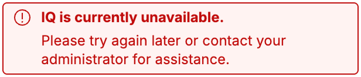
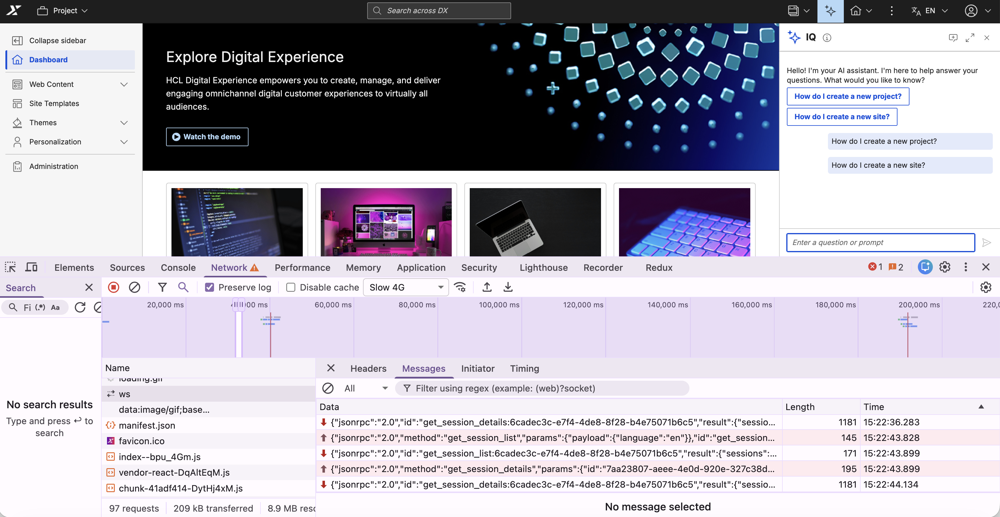

Troubleshooting IQ
This section provides guidance on resolving common issues and capturing diagnostic information while using IQ. HCL Digital Experience (DX) log files and browser developer tools help isolate and analyze interface and connection errors.
Before investigating specific errors, perform these basic checks:
- Sign in to HCL DX with valid credentials and permissions.
- Update your browser to the latest version of Chrome, Firefox, Edge, or Safari.
- Turn on JavaScript in your browser settings.
- Verify your network connection is stable.
- Confirm your corporate firewall or proxy allows WebSocket connections.
- Verify that IQ is installed and enabled on your deployment.
If the issue appears to be MCP-related, also verify that the dx-mcp-server service is deployed, reachable, and matched to the IQ chart version you installed.
User interface
If interface or display issues occur, clear the browser cache and perform a hard refresh using Ctrl+Shift+R (or Cmd+Shift+R on Mac). For Safari, use Cmd+Option+R.
Missing interface icon
If the sparkle icon or floating action button (FAB) does not appear:
- Verify if IQ is installed or enabled. For more information, refer to Enabling IQ.
- Verify your account permissions with a system administrator. While IQ is optimized for the Practitioner persona, any authorized DX user can access it.
Incorrect message display
If responses appear garbled, lack formatting, or fail to render code blocks:
- Verify you are using the latest version of a supported browser.
- Open an incognito window, log into HCL DX, and check if the messages display correctly. This rules out interference from browser extensions.
Connection and performance issues
Unresponsive interface
If the interface opens but messages receive no response, or the "Thinking..." indicator runs indefinitely:
- Select Start a new conversation in the header, close and reopen the interface, or refresh the page to clear an expired session.
- Temporarily disable your VPN to rule out network routing interference. If connectivity is restored, configure the VPN to allow WebSocket connections to the IQ endpoint.
- Check if a corporate proxy or firewall is blocking the WebSocket connection to
/dx/api/iq/v1/ws. Refer to Client-side tracing for instructions on inspecting this connection in your browser. - If the network connection is valid but the interface remains frozen, contact your DX administrator to verify that the
dx-iq-integratorbackend service is running and reachable. - If IQ was recently upgraded, confirm that the
dx-mcp-serverservice was upgraded at the same time and that the endpoint is responding.
Slow response times
If IQ is consistently slow to respond:
- Break complex or multi-part questions into shorter, more specific prompts.
- Test the connection from an alternate network to isolate local network latency.
- Temporarily disable your VPN to determine if the network tunnel is introducing latency.
- Contact your system administrator to check the backend load. High usage may require scaling the IQ container service.
Error messages
When a backend operation fails, the IQ interface displays a generic alert banner to the user:

To identify the underlying cause behind this banner, review the backend response payloads within the browser developer tools or examine the container logs to classify the issue:
| Error | Description | Solution |
|---|---|---|
| Communication error | An error occurred while communicating with the core DX server during a backend operation. | Make sure the core HCL DX server is active and reachable from the IQ integrator container. |
| Connection error | The client-side WebSocket connection between the browser and the IQ backend failed to establish. | Check local network connectivity. Make sure corporate firewalls, VPNs, or reverse proxies allow WebSocket traffic on /dx/api/iq/v1/ws. |
| Invalid format | The core DX server responded, but the data payload was in an unexpected or invalid format. | Make sure the HCL DX base platform and IQ components are running compatible versions. Check logs for API contract mismatches. |
| No response or timeout | A backend request took too long, or the core DX server failed to return a response. | Try a shorter or simpler prompt. Check backend logs for connection drops or high resource utilization on the core platform. |
| Unable to connect to AI service | The IQ backend is active but cannot establish a connection to the external LLM provider. | Wait and try the request again. Contact a system administrator to check the LLM provider credentials, API keys, and outbound network connectivity. |
| Unauthorized | The active user session does not have the necessary roles or permissions to access IQ. | Contact your HCL DX system administrator to check your user persona configuration and role assignments. |
| Unsupported operation | The AI assistant does not have the capability required to perform the action requested by your prompt. | Rephrase the prompt. If the operation is supported on your system, make sure the required backend modules or integrations are fully configured and enabled. |
Backend services
If validation fails, use this table to isolate the cause:
| Issue | Possible cause | Solution |
|---|---|---|
| Pods not starting | Image pull errors | Verify image tags and repository access. |
| Database connection fails | Incorrect credentials or host | Verify database secret and configuration in Preparing the database. |
| WebSocket errors | Network policy restrictions | Check Kubernetes network policies. |
| Model Context Protocol (MCP) integration issues | Web Content Manager (WCM) or Digital Asset Management (DAM) not enabled | Verify mcpServer.enableWcm and mcpServer.enableDam settings in Helm values. |
| No AI responses | LiteLLM configuration issue | Check LITELLM_API_KEY and LITELLM_URL in Deploying services - Installing the IQ backend server. |
To inspect pod configurations and system logs:
kubectl logs -n <YOUR_NAMESPACE> deployment/dx-iq-integrator --tail=200
kubectl describe pod -n <YOUR_NAMESPACE> -l app=dx-iq-integrator
Integrator pod startup failures
If the Integrator pod fails to start, check the container logs and verify these common issues:
MCP_SERVER_LIST misconfiguration
If connection errors to the MCP Server occur in the Integrator logs, run these commands to check the deployment status and network resolution:
kubectl get pod -n <YOUR_NAMESPACE> -o jsonpath='{.items[?(@.metadata.labels.app=="<IQ_RELEASE_NAME>-mcp-server")].metadata.name}' && echo ""
# Expected output: <IQ_RELEASE_NAME>-mcp-server-<random>
# Verify the service DNS name resolves and responds
kubectl run -it --rm debug --image=curlimages/curl --restart=Never -n <YOUR_NAMESPACE> -- \
curl -w "\nHTTP Status: %{http_code}\n" http://<IQ_RELEASE_NAME>-mcp-server:3000/probe/live
# Expected output: "MCP server live" with "HTTP Status: 200"
Incorrect release name used
Confirm your release name matches the value used in the MCP_SERVER_LIST property. For example, if you installed the chart using helm install dx-iq, use http://dx-iq-mcp-server:3000.
LiteLLM connectivity
Verify that the Integrator can reach the LiteLLM proxy using the API key specified in the LITELLM_API_KEY variable.
Connection failures
If you encounter errors such as Connection refused or Password authentication failed while verifying your database connectivity, the IQ Integrator cannot reach the database. Use the verification steps for your database type to locate the root cause.
Internal database
Check the persistence node logs to confirm the database and user were created automatically:
kubectl logs -n <YOUR_NAMESPACE> <DX_RELEASE_NAME>-persistence-node-0 -c persistence-node | grep -i "iq"
Expected output:
Creating IQ user "dx_iq_db_user"...
Creating IQ database "iqdb"...
If the security.iq.dbPassword parameter was missing during the deployment upgrade, the log shows this warning:
WARNING: No password specified for "dx_iq_db_user". Skipping IQ user and database creation.
External database
Verify network connectivity from within the cluster to your external database instance. The correct tool, flags, and command structure depend entirely on your database type and network security configuration. Adjust the connection parameters in this sample command to match your specific database engine:
kubectl run pg-test --rm -it --image=postgres:16 --restart=Never -n <YOUR_NAMESPACE> -- \
psql "host=<DB_HOST> port=5432 dbname=iqdb user=<DB_USERNAME> password=<DB_PASSWORD> sslmode=require"
Runtime Controller (RTC)-managed database
Check the Runtime Controller logs to confirm the automatic provisioning completed successfully:
kubectl logs -n <YOUR_NAMESPACE> deployment/<DX_RELEASE_NAME>-runtime-controller | grep -i "iq database"
Expected output:
IQ database setup completed successfully.
If the logs show IQ database setup failed., verify that the custom-credentials-iq-db secret exists in the namespace and that security.iq.customDbSecret was defined correctly during deployment.
MCP Server
Before investigating MCP-related errors, perform these basic checks:
- Confirm IQ is installed and enabled.
- Confirm
dx-iq-integratoranddx-mcp-serverservices are running and healthy. - Confirm network routing and DNS resolution between DX, IQ, and MCP services.
- Confirm no recent release mismatch between IQ and MCP server components.
- Confirm MCP endpoint reachability for your deployment path (
/mcpor/dx/api/iq/v1/mcp). - Confirm probe endpoint status (
/probe/livehealthy and/probe/readyready). For readiness pass or fail behavior, refer to Managing endpoints and security.
Common symptoms and actions
| Issue | Possible cause | Solution |
|---|---|---|
| IQ request does not return a response | MCP Server is unreachable, unhealthy, or routed incorrectly | Validate service health, route configuration, and MCP endpoint reachability. |
| Repeated timeout behavior | Network latency, backend load, or upstream dependency delay | Test from an alternate network path, review backend load, and inspect IQ and MCP logs. |
| Intermittent failures in scaled environments | Pod-level instability or routing inconsistency | Check pod health, replica status, and restart patterns. |
| Payload-related request failures | Request body exceeds configured size limit | Validate payload size and review the BODY_PARSER_JSON_LIMIT configuration. |
| Unable to connect to AI service | MCP Server cannot reach configured AI provider dependencies | Check provider credentials, secrets, and outbound connectivity from cluster services. |
| Invalid format or protocol errors | Service version mismatch or contract mismatch across components | Verify compatible DX, IQ integrator, and MCP Server versions, and then review logs for parsing or schema failures. |
Advanced diagnostics
Use advanced diagnostics to isolate complex network, interface, or server-side issues. Administrators can trace client-side browser traffic or adjust server log levels to capture detailed backend performance data.
Enabling client-side tracing
Capture detailed diagnostic information using browser developer tools to investigate WebSocket and interface issues.
- Open browser Developer Tools by pressing F12 or right-clicking the page and selecting Inspect.
- Select the Console tab and check for error logs or warnings related to IQ.
-
Select the Network tab and filter by WS to inspect the active WebSocket connection. Ensure the connection to
/dx/api/iq/v1/wsshows a status code of200. Select the connection string to view the individual JSON-RPC messages exchanged between the browser and IQ.
-
To export a full trace for HCL Support, right-click inside the Console tab and select Save as to export the log file.
Enabling server-side logging and tracing
To isolate deployment issues, enable debug logs for the IQ Integrator and MCP Server. Comparing timestamps across both logs helps pinpoint where processing failures occur.
The logging block in the Helm values sets logging levels. The deployment writes these settings to a shared ConfigMap ({{ .Release.Name }}-global-iq) and mounts the configuration into each pod at /etc/global-config/. The Integrator reads its log settings from the file path defined by LOG_SETTINGS_FILE (default: /etc/global-config/log.integrator).
| Helm values key | Type | Default | Description |
|---|---|---|---|
logging.integrator.level |
Array of strings | ["api:server-v1:*=info"] |
Log rules for the IQ Integrator pod. |
logging.mcpServer.level |
Array of strings | ["api:server-v1:*=info"] |
Log rules for the DX MCP Server pod. |
Each entry in the array follows the internal logger package format: namespace=level. The runtime joins multiple rules with commas. Both pods initialize logging with LOG_CONTEXT=api, so the root namespace prefix for all log rules is api:server-v1.
| Level | Description |
|---|---|
error |
Error events only |
info |
General operational messages (recommended for production) |
debug |
Detailed diagnostic output |
The following example shows how to enable debug output for all integrator namespaces:
logging:
integrator:
level:
- "api:server-v1:*=debug"
The following example shows how to mix levels across namespaces:
logging:
integrator:
level:
- "api:server-v1:llm*=debug"
- "api:server-v1:*=info"
To apply these configurations during a troubleshooting session, update the custom values file and upgrade the Helm release.
-
Change the
logginglevel in yourcustom-iq-debug-values.yamlfile:logging: integrator: level: - "api:*=debug" # Revert to "info" when done mcpServer: level: - "api:*=debug" # Revert to "info" when doneAdjust the logging granularity using these patterns:
Warning
debuglogging produces high-volume output. Only use it while investigating an active issue, then revert the level toinfo.Pattern Description api:*=infoInfo-level logging for the API layer api:*=debugDebug-level logging for the API layer ui:*=infoInfo-level logging for the UI layer ui:*=debugDebug-level logging for the UI layer -
Apply the updated settings:
helm upgrade dx-iq \ https://<YOUR_REPOSITORY_FQDN_AND_PATH>/<IQ_HELM_CHART_VERSION>.tgz \ --namespace <YOUR_NAMESPACE> \ --reuse-values \ --values custom-iq-debug-values.yaml<IQ_HELM_CHART_VERSION>: The Helm chart version (for example,hcl-dx-iq-v1.0.0_20260518-2104.tgz).<YOUR_NAMESPACE>: The Kubernetes namespace.<YOUR_REPOSITORY_FQDN_AND_PATH>: The repository fully qualified domain name (FQDN) and chart path.
-
Reproduce the issue, then pull the logs from both services:
kubectl logs -n <YOUR_NAMESPACE> deployment/dx-iq-integrator --tail=200 kubectl logs -n <YOUR_NAMESPACE> deployment/dx-iq-mcp-server --tail=200
Contacting HCL Support
If you encounter issues that cannot be resolved using these steps, open a ticket through the HCL Support portal.
Tip
Collect your Helm deployment values for both your HCL DX and IQ releases before opening a ticket. Support engineers require both datasets to diagnose configuration issues effectively.
Collect your DX and IQ deployment values:
helm get values <DX_RELEASE_NAME> --namespace <YOUR_NAMESPACE>
helm get values <IQ_RELEASE_NAME> --namespace <YOUR_NAMESPACE>
<DX_RELEASE_NAME>: The DX Helm release name (for example,dx-deployment).<IQ_RELEASE_NAME>: The IQ Helm release name (for example,dx-iq).
Sensitive values
The output might contain passwords and secrets. Review and redact all sensitive credentials before sharing the data.
If you are using an external database, include these additional connectivity details:
- Database host and port (for example,
iq-postgres.c9akciq32.us-east-1.rds.amazonaws.com:5432). - Database name (for example,
iqdb). - Whether TLS is enabled (
dbTlsEnabled: trueorfalse). -
Network reachability confirmation, such as the output of this connection test:
kubectl run -it --rm debug --image=postgres:15 --restart=Never -n <YOUR_NAMESPACE> -- \ psql "host=<DB_HOST> port=<DB_PORT> dbname=<DB_NAME> user=<DB_USER> sslmode=require" -c "\conninfo" -
Relevant database connection error segments from the IQ Integrator pod logs.